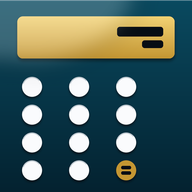

Tarehe yako ya kuzaliwa na jina lako hubeba kundi dogo la nambari za msingi ambazo numerolojia imetumia kwa karne nyingi kuelezea tabia, vipaji na mwelekeo wa maisha. Andika zako hapa chini — kikokotoo hiki huonyesha kila nambari NA kila hatua ya jinsi ilivyokokotolewa, kwa hivyo hakuna kisichojulikana.
Majina hukokotolewa kwa chati ya kawaida ya Pythagoras ya A–Z, kwa hivyo andika jina lako kwa herufi za Kilatini (A–Z), kama linavyoonekana kwenye cheti chako cha kuzaliwa.
Andika tarehe mbili za kuzaliwa ili kulinganisha Nambari zao za Njia ya Maisha na kuona jinsi uhusiano huo unavyosomwa kwa njia ya kitambo.
Jina lako kamili kama linavyoonekana kwenye cheti chako cha kuzaliwa — hilo ndilo jina ambalo numerolojia ya kawaida hutumia kwa nambari za Kujieleza, Hamu ya Nafsi na Haiba. Jina la ndoa au jina lililobadilishwa huongeza mtetemo wa ziada, lakini jina la kuzaliwa hubaki kuwa msingi kila wakati.
11, 22 na 33 huitwa nambari kuu. Jumla inapofikia mojawapo ya nambari hizi, mbinu ya kawaida haipunguzi zaidi, kwa sababu husomwa kama toleo lenye nguvu zaidi la mzizi wake (11 ya 2, 22 ya 4, 33 ya 6). Kikokotoo hiki huhifadhi nambari kuu na hukujulisha nambari kuu inapoonekana katika ukokotoaji wako.
Katika mbinu ya kawaida, Y hufanya kazi kama irabu inapokuwa sauti pekee ya irabu katika silabi yake na haiko karibu na irabu nyingine (kama katika Lynn au Mary); ikiwa karibu na irabu, hufanya kazi kama konsonanti (kama katika Young). Kikokotoo hiki hutumia kanuni hiyo na huonyesha wazi herufi zipi kilizihesabu kama irabu katika ukokotoaji wako.
Hapana — numerolojia ni mfumo wa kitamaduni wa kutafsiri, si sayansi. Chukulia matokeo kama burudani na chakula cha kutafakari, kamwe si msingi wa maamuzi ya kitabibu, ya kifedha au ya kisheria.
Numerolojia katika mapokeo ya Pythagoras hugeuza herufi kuwa nambari kwa chati isiyobadilika — herufi huzunguka tu kutoka 1 hadi 9:
Chati ya herufi ya Pythagoras
| 1 | A · J · S |
| 2 | B · K · T |
| 3 | C · L · U |
| 4 | D · M · V |
| 5 | E · N · W |
| 6 | F · O · X |
| 7 | G · P · Y |
| 8 | H · Q · Z |
| 9 | I · R |
Njia ya Maisha — punguza mwezi, siku na mwaka wa kuzaliwa kila moja peke yake (kwa kujumlisha tarakimu zake hadi tarakimu moja — au nambari kuu 11, 22 au 33 — ibaki), jumlisha matokeo matatu, kisha punguza tena kwa njia hiyo hiyo. Kujieleza (Hatima) — jumlisha thamani za kila herufi ya jina kamili la kuzaliwa kisha punguza. Hamu ya Nafsi — vivyo hivyo, kwa kutumia irabu pekee (Y huhesabiwa kama irabu inapokuwa sauti pekee ya irabu katika silabi yake na haiko karibu na irabu nyingine). Haiba — vivyo hivyo, kwa kutumia konsonanti pekee. Mwaka wa Kibinafsi — jumlisha mwezi wa kuzaliwa uliopunguzwa, siku ya kuzaliwa iliyopunguzwa na mwaka uliochaguliwa uliopunguzwa, kisha punguza hadi tarakimu moja 1–9; huendeshwa katika mizunguko inayojirudia ya miaka 9.
Njia ya Maisha: Mwezi 12 → 1 + 2 = 3. Siku 10 → 1 + 0 = 1. Mwaka 1815 → 1 + 8 + 1 + 5 = 15 → 1 + 5 = 6. Jumla 3 + 1 + 6 = 10 → 1 + 0 = 1.
Kujieleza: ADA = 1 + 4 + 1 = 6. LOVELACE = 3 + 6 + 4 + 5 + 3 + 1 + 3 + 5 = 30. Jumla ya jina kamili 6 + 30 = 36 → 3 + 6 = 9.
Hamu ya Nafsi (irabu): A + A + O + E + A + E = 1 + 1 + 6 + 5 + 1 + 5 = 19 → 10 → 1.
Haiba (konsonanti): D + L + V + L + C = 4 + 3 + 4 + 3 + 3 = 17 → 1 + 7 = 8.
Ongeza kikokotoo hiki kwenye tovuti au blogu yako mwenyewe — ni bure kabisa, hakihitaji kujisajili, na huonyesha toleo jipya zaidi kila wakati. Nakili msimbo ulio hapa chini na uubandike kwenye ukurasa wako mahali unapotaka kikokotoo kionekane. Kuweka mstari mdogo wa kutaja chanzo “Powered by Loona Automation” chini ya kipachiko husaidia kuendeleza zana hii kuwa bure — lakini uko huru kuupamba au kuuondoa; zana hufanya kazi kwa njia yoyote ile.